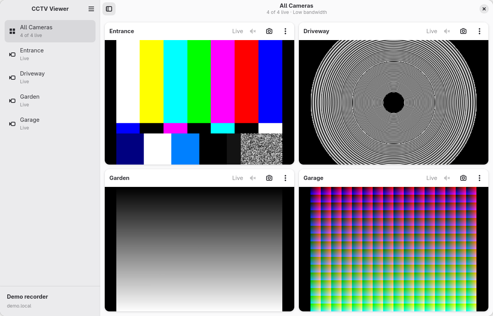
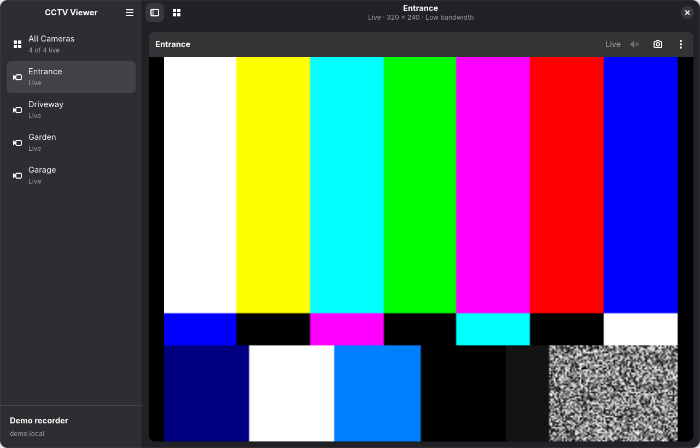
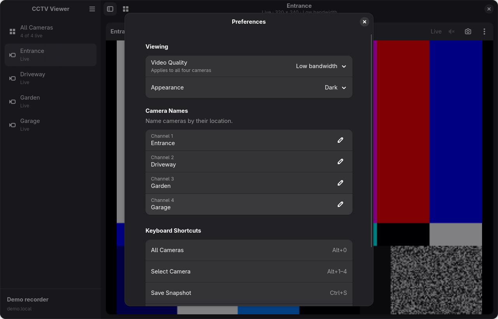

CCTV Viewer
A small native Linux viewer for four-channel CP PLUS recorders.
Watch your cameras, listen to audio, save snapshots, and find RTSP devices on your home network.
Install with Flatpak
For x86_64 Linux desktops with Flatpak. The GNOME runtime is installed as needed.
Updates are verified using this repository’s signing key.
flatpak install --user https://sh7vansh.github.io/cctv-viewer/cctv-viewer.flatpakref
After installation, updates arrive through your software manager or flatpak update.
Screenshots
Actual app windows with synthetic demo feeds. No private camera footage is shown.
Select an image to view it at full size.

All four cameras, with sidebar navigation and individual controls.

Focus on one camera in dark appearance.

Choose video quality, change appearance, and name your cameras.